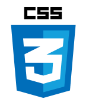

A propos de moi
Je me présente Aurore, développeur web passionnée et perfectionniste, un professionnel qui cherche des solutions qui vous ressemblent et vous permettent le développement de votre activité. Je suis de nature attentive et à votre écoute, ce qui me permet de cerner précisément vos besoins et vos attentes. Je suis la solution Web pour la création de votre site internet.
Ma mission est simple : je crée pour vous, un site internet sur mesure, personnalisé à votre image en y incluant l’identité de votre entreprise et en répondant à votre stratégie en e-commerce. Votre clientèle pourra savourer sa visite sur votre site, surfer avec plaisir en apprenant à mieux vous connaître, tout en découvrant votre gamme de produits de services ainsi que vos prestations.
Ma philosophie est simple : vous apporter mon aide professionnelle, technique et créative dans le développement de votre activité par le biais de la création de votre site internet reflétant votre personnalité.
Forte de ma formation de niveau 5 « développeur web », je décide tout naturellement de me lancer vers cette nouvelle aventure de l’auto-entreprise avec Aurore Création Web.
Cette situation sanitaire nous permet et nous incite à nous réinventer chaque jour, en cherchant de nouvelles façons de commercer, de présenter ses produits, services, prestations … c’est aussi ma politique ! Et je l’applique en mettant mes compétences à votre service.
Ma création de site internet vous permettra de:
Développer votre clientèle,
Attirer de nouveaux clients,
Communiquer considérablement sur votre entreprise,
Obtenir une large ouverture en vous permettant d’être vu et de vous faire connaître.
C’est un soutien et une aide complémentaire à vos stratégies de vente, c’est votre atout indispensable que je souhaite créer pour vous !
Compétences


Méticuleuse
Organisée
Créative
... et modeste